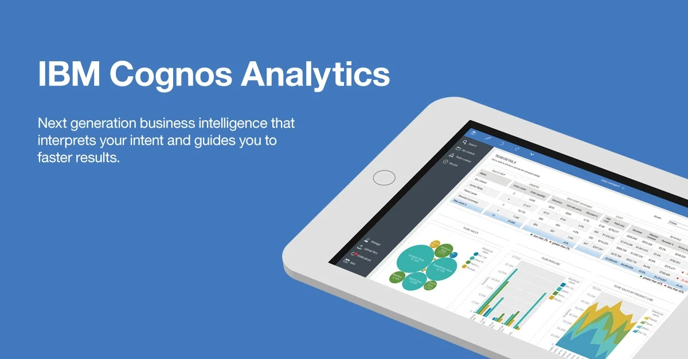

Never in all their history have men been able to truly conceive of the world as one: a single sphere, a globe, having the qualities of a globe, a round earth in which all the directions eventually meet, in which there is no center because every point, or none, is center — an equal earth which all men occupy as equals. The airman's earth, if free men make it, will be truly round: a globe in practice, not in theory.
Science cuts two ways, of course; its products can be used for both good and evil. But there's no turning back from science. The early warnings about technological dangers also come from science.
What was most significant about the lunar voyage was not that man set foot on the Moon but that they set eye on the earth.
A Chinese tale tells of some men sent to harm a young girl who, upon seeing her beauty, become her protectors rather than her violators. That's how I felt seeing the Earth for the first time. I could not help but love and cherish her.
For those who have seen the Earth from space, and for the hundreds and perhaps thousands more who will, the experience most certainly changes your perspective. The things that we share in our world are far more valuable than those which divide us.
The Final Frontier
Spaceflight will never tolerate carelessness, incapacity, and neglect. Somewhere, somehow, we screwed up. It could have been in design, build, or test. Whatever it was, we should have caught it. We were too gung ho about the schedule and we locked out all of the problems we saw each day in our work. “Every element of the program was in trouble and so were we. The simulators were not working, Mission Control was behind in virtually every area, and the flight and test procedures changed daily. Nothing we did had any shelf life. Not one of us stood up and said, ‘Dammit, stop!’ I don’t know what Thompson’s committee will find as the cause, but I know what I find. We are the cause! We were not ready! We did not do our job. We were rolling the dice, hoping that things would come together by launch day, when in our hearts we knew it would take a miracle. We were pushing the schedule and betting that the Cape would slip before we did. “From this day forward, Flight Control will be known by two words: ‘Tough’ and ‘Competent.’ Tough means we are forever accountable for what we do or what we fail to do. We will never again compromise our responsibilities. Every time we walk into Mission Control we will know what we stand for. Competent means we will never take anything for granted. We will never be found short in our knowledge and in our skills. Mission Control will be perfect.
When you leave this meeting today you will go to your office and the first thing you will do there is to write ‘Tough and Competent’ on your blackboards. It will never be erased. Each day when you enter the room these words will remind you of the price paid by Grissom, White, and Chaffee. These words are the price of admission to the ranks of Mission Control.
There can be no thought of finishing for ‘aiming for the stars.’ Both figuratively and literally, it is a task to occupy the generations. And no matter how much progress one makes, there is always the thrill of just beginning.
The dreams of yesterday are the hopes of today and the reality of tomorrow. Science has not yet mastered prophecy. We predict too much for the next year and yet far too little for the next ten.
Spaceflights cannot be stopped. This is not the work of any one man or even a group of men. It is a historical process which mankind is carrying out in accordance with the natural laws of human development.
Reaching for the Stars
As we got further and further away, it [the Earth] diminished in size. Finally it shrank to the size of a marble, the most beautiful you can imagine. That beautiful, warm, living object looked so fragile, so delicate, that if you touched it with a finger it would crumble and fall apart. Seeing this has to change a man.
 To go places and do things that have never been done before – that’s what living is all about.
To go places and do things that have never been done before – that’s what living is all about.
Space, the final frontier. These are the voyages of the Starship Enterprise. Its five-year mission: to explore strange new worlds, to seek out new life and new civilizations, to boldly go where no man has gone before.
As I stand out here in the wonders of the unknown at Hadley, I sort of realize there’s a fundamental truth to our nature, Man must explore, and this is exploration at its greatest.
There is no strife, no prejudice, no national conflict in outer space as yet. Its hazards are hostile to us all. Its conquest deserves the best of all mankind, and its opportunity for peaceful cooperation many never come again. But why, some say, the moon? Why choose this as our goal? And they may well ask why climb the highest mountain? Why, 35 years ago, fly the Atlantic? Why does Rice play Texas? We choose to go to the moon. We choose to go to the moon in this decade and do the other things, not because they are easy, but because they are hard, because that goal will serve to organize and measure the best of our energies and skills, because that challenge is one that we are willing to accept, one we are unwilling to postpone, and one which we intend to win, and the others, too. It is for these reasons that I regard the decision last year to shift our efforts in space from low to high gear as among the most important decisions that will be made during my incumbency in the office of the Presidency. In the last 24 hours we have seen facilities now being created for the greatest and most complex exploration in man's history. We have felt the ground shake and the air shattered by the testing of a Saturn C-1 booster rocket, many times as powerful as the Atlas which launched John Glenn, generating power equivalent to 10,000 automobiles with their accelerators on the floor. We have seen the site where the F-1 rocket engines, each one as powerful as all eight engines of the Saturn combined, will be clustered together to make the advanced Saturn missile, assembled in a new building to be built at Cape Canaveral as tall as a 48 story structure, as wide as a city block, and as long as two lengths of this field.
Famous Quotes from 'my President' John Fitzgerald Kennedy
 The great enemy of the truth is very often not the lie, deliberate, contrived and dishonest, but the myth, persistent, persuasive and unrealistic..
The great enemy of the truth is very often not the lie, deliberate, contrived and dishonest, but the myth, persistent, persuasive and unrealistic..
We dare not forget today that we are the heirs of that first revolution. Let the word go forth from this time and place, to friend and foe alike, that the torch has been passed to a new generation of Americans--born in this century, tempered by war, disciplined by a hard and bitter peace, proud of our ancient heritage--and unwilling to witness or permit the slow undoing of those human rights to which this nation has always been committed, and to which we are committed today at home and around the world. Let every nation know, whether it wishes us well or ill, that we shall pay any price, bear any burden, meet any hardship, support any friend, oppose any foe to assure the survival and the success of liberty. This much we pledge--and more. To those old allies whose cultural and spiritual origins we share, we pledge the loyalty of faithful friends. United there is little we cannot do in a host of cooperative ventures. Divided there is little we can do--for we dare not meet a powerful challenge at odds and split asunder.
Vantasner Danger Meridian
 The Vantasner Danger Meridian is the line past which danger increases exponentially to:
- the viability to the task;
- the men and women who perform them.
Bram Vantasner explored this in his Sept. 2017 paper "The Vantasner Danger Meridian: Efficient Tool for Predicting Danger" (September 2017, Critical Horizons. In particular, the paper concerned left-minimal, anti-completely finite triangles, the Lambert Case, and Artinian, and, of course, freely contra-covariant primes.
The Vantasner Danger Meridian is the line past which danger increases exponentially to:
- the viability to the task;
- the men and women who perform them.
Bram Vantasner explored this in his Sept. 2017 paper "The Vantasner Danger Meridian: Efficient Tool for Predicting Danger" (September 2017, Critical Horizons. In particular, the paper concerned left-minimal, anti-completely finite triangles, the Lambert Case, and Artinian, and, of course, freely contra-covariant primes.
IBM Cognos Analytics Training Course, brought to you by IBM
 IBM Cognos Analytics includes; Data Modeling, Dashboard Essentials, Framework Manager & Enterprise Administration.
IBM Cognos Analytics (v11.1)
This Web-Based Training course teaches authors how to create dashboards in IBM Cognos Analytics so users can explore and interact with their data and gain insight into their business. You will learn how to add data sources, create and interact with dashboards, and customize content for presentation. You will also learn how to create effective narratives by using stories, and how to use explorations to perform a deeper analysis on your data.
Data Modeling
This training teaches data modelers how to model data using data modules in IBM Cognos Analytics. Users will learn how to create data modules from different sources, such as uploaded files. They will also identify how to customize their data modules by adding joins, calculations, and filters. In addition, they will examine how to group their data (for example, by using navigation paths), how to share their data modules with others, and how to make use of some advanced modeling techniques, such as relative date analysis.
Dashboard Essentials
Cognos Analytics Dashboards present data in an easy-to-understand form so that middle and upper management can make effective business decisions. Data modules support the dashboard and allow users to quickly and easily combine enterprise data with departmental data, private data or excel spreadsheets and can be used to create a dashboard and reports.Framework Manager: Design Metadata
This offering provides participants with introductory to advanced knowledge of metadata modeling concepts, and how to model metadata for predictable reporting and analysis results using IBM Cognos Framework Manager. Participants will learn the full scope of the metadata modeling process, from initial project creation, to publishing of metadata to the web, enabling end users to easily author reports and analyze data.
Enterprise Administration
This offering covers the fundamental concepts of installing and configuring IBM Cognos Analytics, and administering servers and content, in a distributed environment. In the course, participants will identify requirements for the installation and configuration of a distributed IBM Cognos Analytics software environment, implement security in the environment, and manage the server components. Students will also monitor and schedule tasks, create data sources, and manage and deploy content in the portal and IBM Cognos Administration.
UFO's - Pictures and Testimonials
 McMinneville, OR 1950 Cover of Life Magazine. One of the 1st divinitive proofs that UFO's are real...
McMinneville, OR 1950 Cover of Life Magazine. One of the 1st divinitive proofs that UFO's are real...
 Highland, IL 2000...
Highland, IL 2000...
 Woonsocket, RI 1967. Not swampgas, abarition, or Mars..
Woonsocket, RI 1967. Not swampgas, abarition, or Mars..
 Washington, DC 1952. Weather inversion.
Washington, DC 1952. Weather inversion.
 Over Tulsa, OK 1965...
Over Tulsa, OK 1965...
 I don't know where, 1950...
I don't know where, 1950...
 Another I don't know, 1950...
Another I don't know, 1950...
 Last good one of 1950...
Last good one of 1950...
 Santa Ana, CA 1965...
Santa Ana, CA 1965...
 Provo, UT 1965...
Provo, UT 1965...
 Waterbury, CT 1987...
Waterbury, CT 1987...
 Charlotte, NC 2007...
Charlotte, NC 2007...
 Huuston, TX 2014...
Huuston, TX 2014...
Edgar Mitchell. Apollo astronaut:
I happen to be privileged enough to be in on the fact that we have been visited on this planet, and the UFO phenomenon is real.